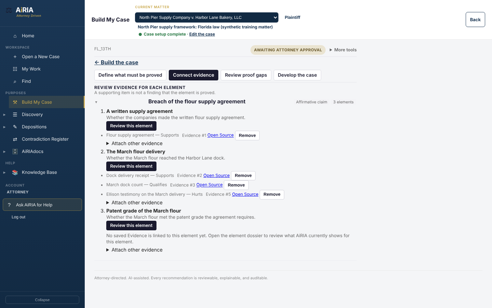
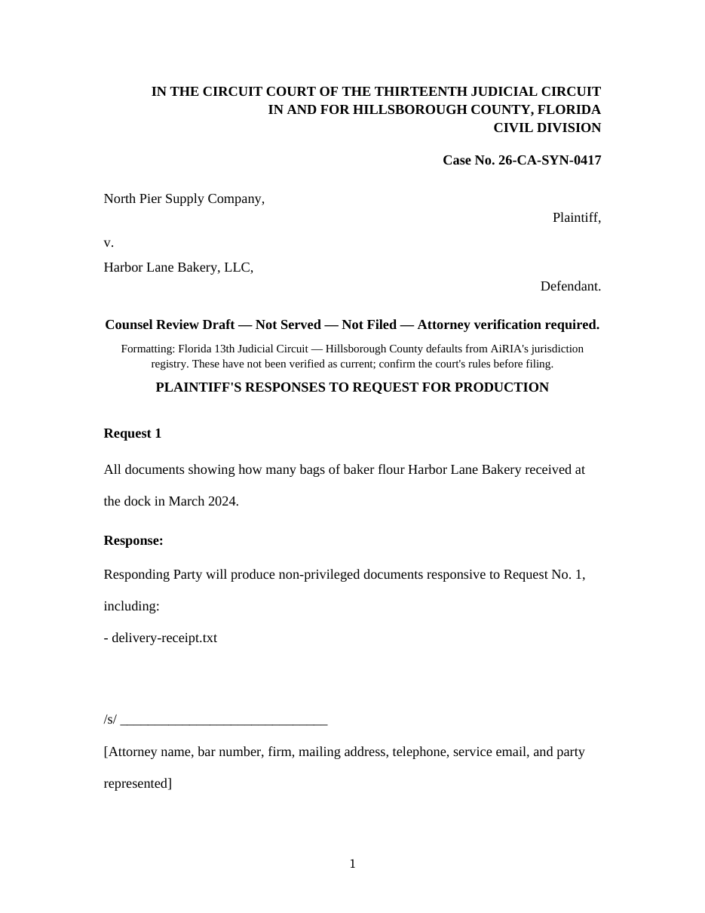
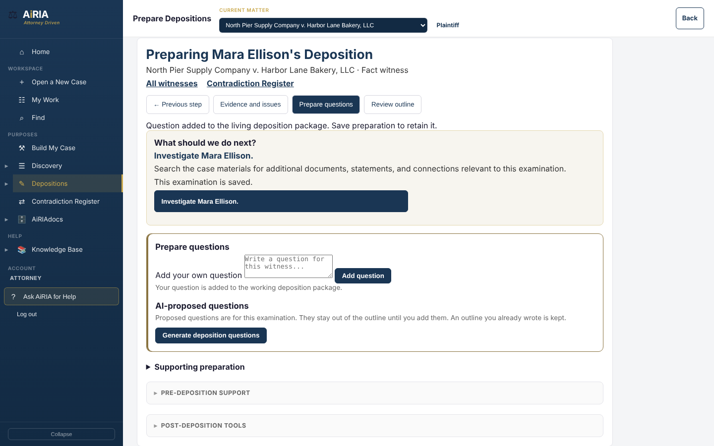
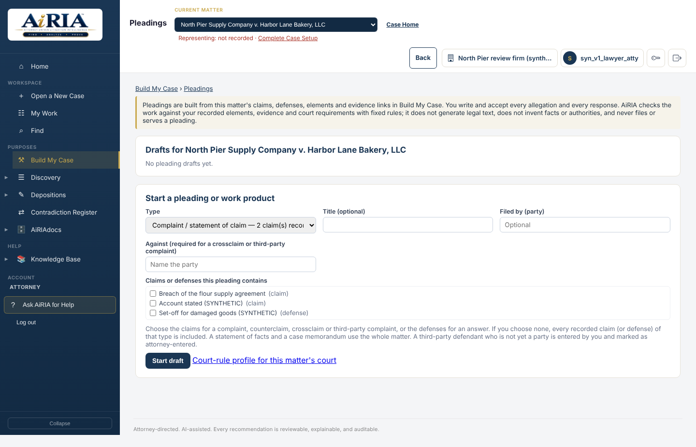
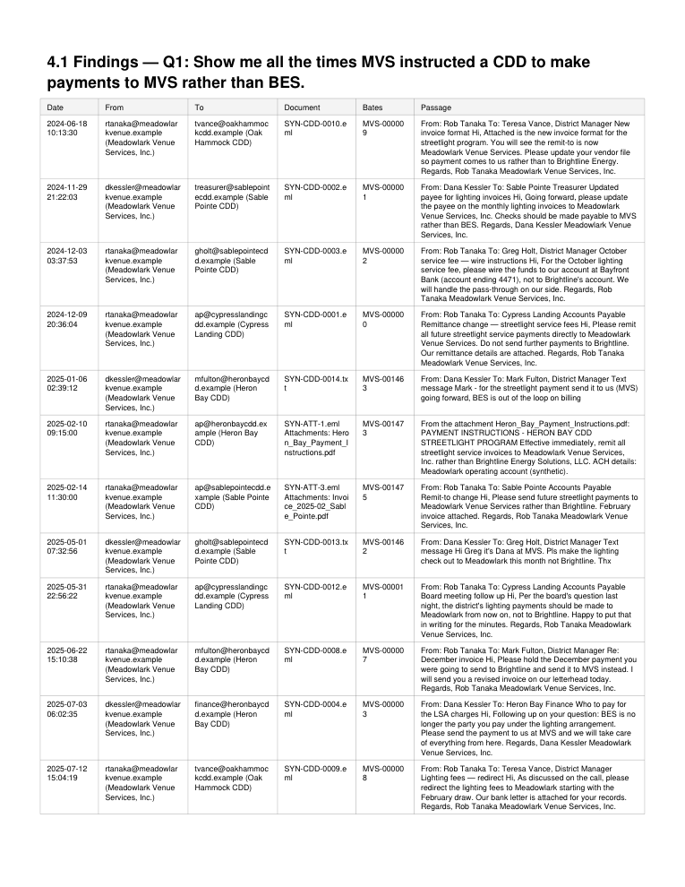

Chronologies
See events, participants and sources in order and carry the developing story through the matter.
 Consult with an AiRIA Expert
Consult with an AiRIA ExpertThe AiRIA platform
AiRIA connects matter-wide evidence review, analysis, and litigation preparation in one attorney-directed, browser-based workflow.
The missing layer
Law firms already have tools that hold documents and tools that retrieve information. AiRIA addresses what happens next: connecting specific evidence to the practical work required to advance the matter.
A connected evidentiary workspace
Connect the record to the legal work
Build My Case connects the legal framework to the factual record. The legal library organizes causes of action, defenses, elements and supporting authorities by jurisdiction, with versions and attorney review keeping the framework connected to the work. Organize claims and defenses by their elements, preserve findings as Evidence, and record whether each source supports, qualifies or hurts the proposition. The team can see what is supported, what is disputed and where more work is needed. Find carries natural-language questions, party names and aliases, source passages and search coverage into that same case journey.

From evidence to execution
See events, participants and sources in order and carry the developing story through the matter.
Prepare requests, edit responses and assemble jurisdiction-aware work product with Bates references.
Connect witnesses, evidence, causes of action and elements to the questions that matter.
Review conflicting statements and records together and decide what needs investigation.
Develop allegations, paragraph responses, claims and defenses with source traceability.
Bring multiple questions, findings, chronology and source references into Word and PDF reports.
Keep privilege, responsiveness and production decisions under attorney direction.
Refine work inside AiRIA and accept or reject writing suggestions before export.
Attorneys can examine how a result was reached, return to the supporting material, and accept, edit, narrow, expand, or reject the work before it is used.
Explore defensibility →Take discovery from the question to the package. Prepare interrogatories, requests for production and requests for admission around the issues and proof gaps. Research incoming requests against the matter, edit responses inside AiRIA, record attorney decisions and assemble the production package. Automatic Bates numbering keeps the record identifiable. Jurisdiction-aware formatting brings the matter’s court settings and recorded requirements into the work, with editable Word drafts and PDF outputs where appropriate.

Prepare the witness around what the case requires. AiRIA connects causes of action and their elements with witness evidence, disputed facts and prior statements to suggest topics and questions. Keep supporting documents close, refine the preparation inside the platform and carry the reviewed work into a deposition package. Compare the transcript with the record to identify follow-up points.

See conflicting accounts in context. AiRIA examines records and statements for potential conflicts and brings them into the Contradiction Register. Review the passages, people, document context and deposition page-and-line references together. Accept, reject or investigate a candidate and carry the issue into case development, discovery or witness preparation.
Pleadings grounded in the matter. Develop complaints and statements of claim, answers and defenses, counterclaims, crossclaims, third-party pleadings, statements of facts and case memoranda. Trace allegations to elements and evidence, answer numbered paragraphs and refine wording inside AiRIA. Review court requirements and export the pleading with its separate traceability record.

A report that brings the research together. Combine several questions into one research report with findings, source passages, chronology and Bates references. Save a version, record attorney approval and download the report in Word or PDF.

Prepare litigation work for United States and Canadian matters using the selected court, jurisdiction and attorney-recorded requirements.
Private demonstrations now available
See one matter from evidence to work product. Ask for a demonstration of Find, Build My Case, Discovery, Depositions, Pleadings and AiRIAdocs. Follow a source through the workflow and see how the team’s work stays connected.
Consult with an AiRIA Expert